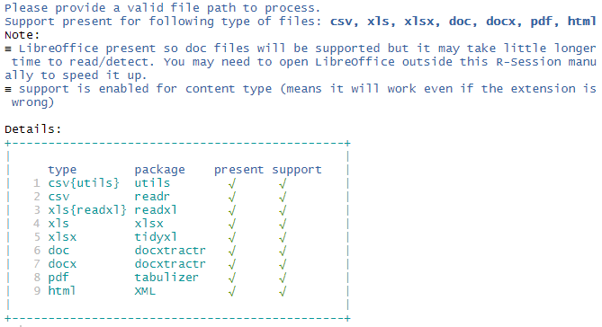
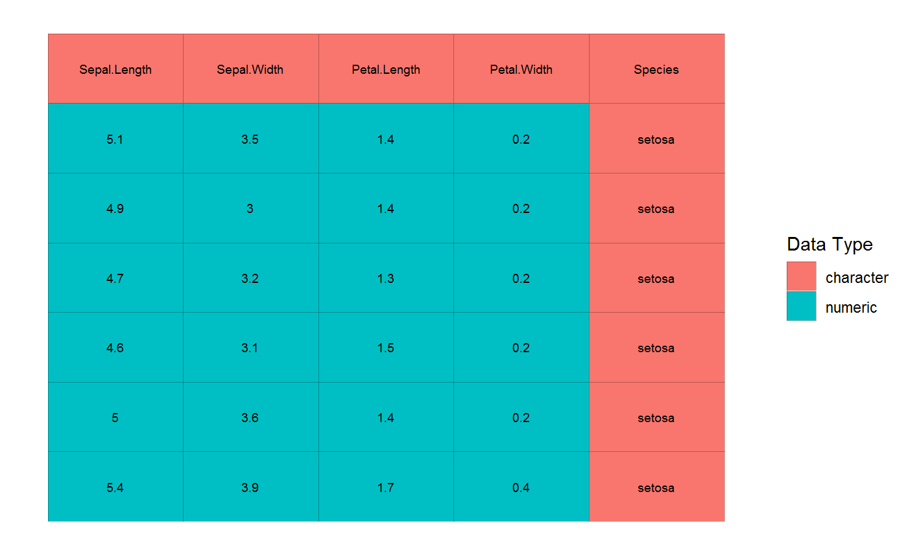
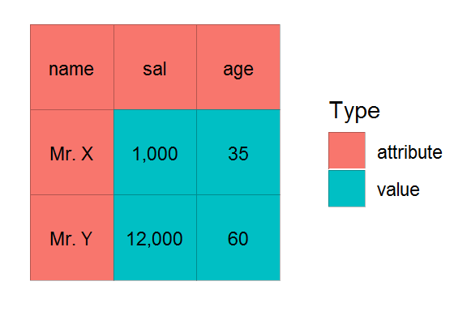
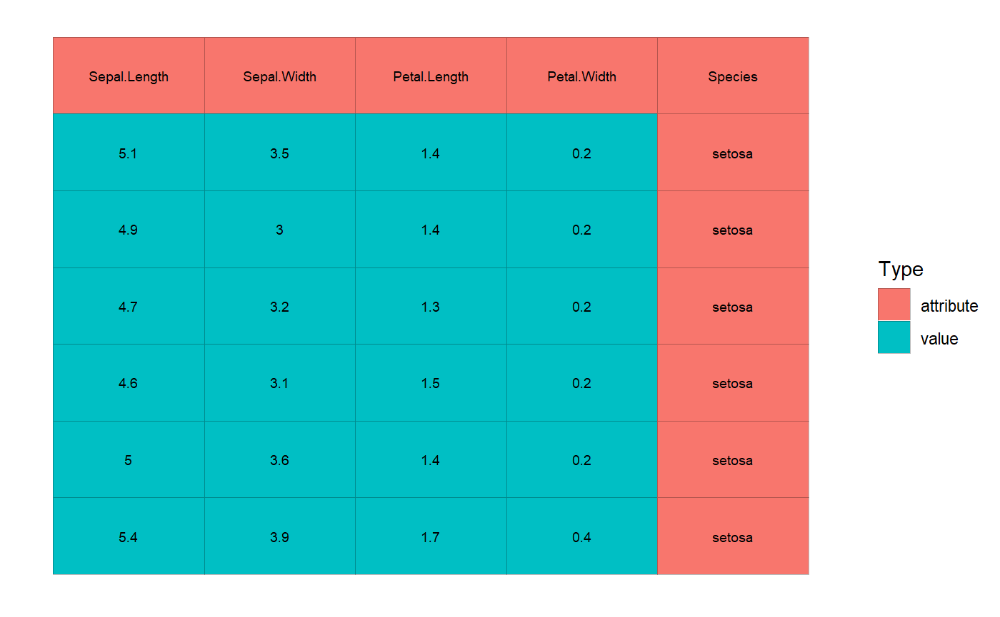
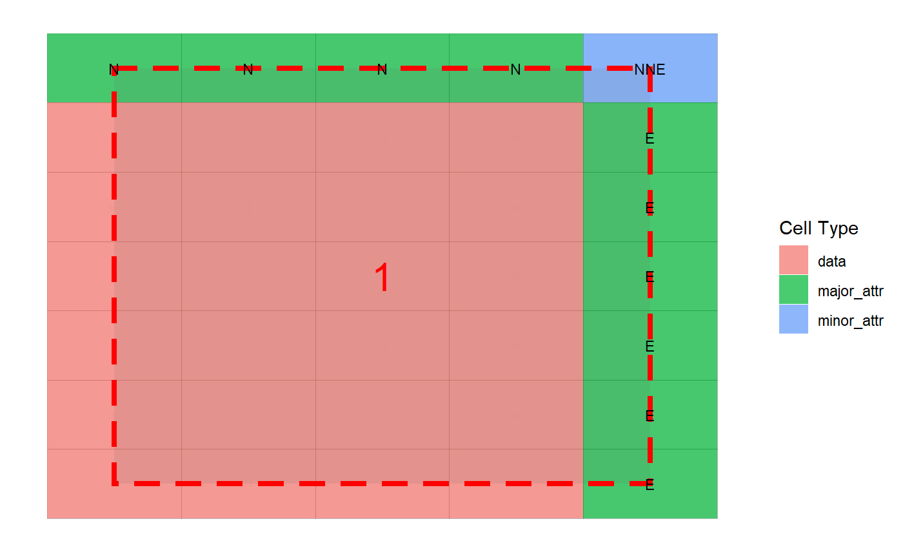
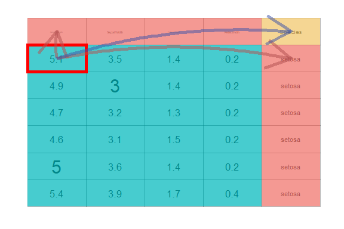
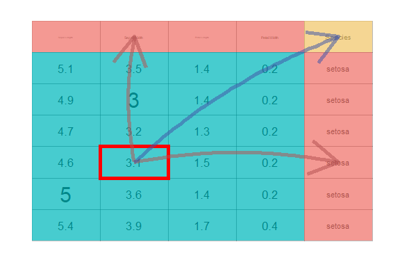

Tidycells Package
Indranil Gayen
2019-08-28
Source:vignettes/tidycells-intro.Rmd
tidycells-intro.Rmd
tidycells
TL;DR
Given a file_name which is a path of a file that contains table(s). Run this read_cells() in the R-console to see whether support is present for the file type. If support is present, just run
Note Just start with a small file.
Inspiration
A spreadsheet is really flexible in storing and sharing data. Many organizations use excel files as their fundamental medium of data exchange (particularly in the government sector). These data are generally not in tidy format (thanks to ultra flexibility of spreadsheets!).
This is a great time killer for R data scientist adopting tidyverse techniques. A lot of time is spent to bring the data into a consumable or usable format (tidy format).
For example, you may check out Database of Indian Economy (a public data dissemination platform from Reserve Bank of India). This platform is a great source of Indian economy data. However, since the target audience of this platform is possibly common people and not data scientists, the data structure is not suitable for ready consumption in tidyverse functions. This is not only one, but there are plenty of great source of data which provides data in “eye-relaxing” format rather than tidy format.
Thanks to great packages like tidyr, tidyxl, unpivotr (and many other sweet packages mentioned in reference) which enable users to spend less time in reshaping the data and focus more on analysis rather than data wrangling.
These packages require user interaction and decision to transform and reshape the raw data (which is still easier than doing copy-paste and transpose in excel) into the tidy format.
However, consider the situations like, you are given a pile of excel (or any other format of spreadsheets) which are somehow similar but are generated by various human hands over a long period (obviously the format and structure will change from file to file). Or you want to build an automated forecast mechanism based on some spreadsheet which updates periodically (possibly you may get the updated file through some automated channel like web scraping, FTP transfer etc.). Or simply you want something like “I’m Feeling Lucky!”
Introduction
The package provides utilities to read, cells from complex tabular data and heuristic detection based ‘structural assignment’ of those cells to a columnar or tidy format.
Read functionality has the ability to read (in a unified manner) structured, partially structured or unstructured tabular data (usually spreadsheets for public data dissemination and aimed for common human understanding) from various types of documents. The tabular information is read as cells. The ‘structure assignment’ functionality has both supervised and unsupervised way of assigning cells data to columnar/tidy format. Multiple disconnected blocks of tables in a single sheet are also handled appropriately.
These tools are suitable for unattended conversation of (maybe a pile of) messy tables (like government data) into a consumable format(usable for further analysis and data wrangling).
Getting Started
1. Reading Data
Assuming you have a document(in either csv, xls, xlsx, docx, doc, html or in pdf, well not a scanned one) which contains a table, you can read the file directly to a tidy format (let’s refer the same as composed format) using read_cells like the following example:
fold <- system.file("extdata", "messy", package = "tidycells", mustWork = TRUE)
# this is because extension is intentionally given wrong
# while filename is actual identifier of the file type
fcsv <- list.files(fold, pattern = "^csv.", full.names = TRUE)[1]Let’s see how the file actually looks like
| Kid.Name | Weight | Age |
|---|---|---|
| Nakshatra | 12 | 1.5 |
| Titas | 16 | 6.0 |
Now we can simply run
| collated_1 | collated_2 | collated_3 | table_tag | value |
|---|---|---|---|---|
| Weight | Nakshatra | Kid Name | Table_1 | 12 |
| Weight | Titas | Kid Name | Table_1 | 16 |
| Age | Nakshatra | Kid Name | Table_1 | 1.5 |
| Age | Titas | Kid Name | Table_1 | 6 |
Not a big deal for csv though. Also looks similar to
| Kid.Name | measure | val_of_measure |
|---|---|---|
| Nakshatra | Weight | 12.0 |
| Titas | Weight | 16.0 |
| Nakshatra | Age | 1.5 |
| Titas | Age | 6.0 |
So what is this package is doing. Looks trivial right? But we’ll look at some more complicated examples in following sections which perhaps may feel to you as non-trivial. So let’s continue.
Note that read_cells is neutral to file extension which means if somehow .xls file is saved as .csv file, then also it will detect the underlying file correctly as xls and use appreciate function to read tabular information contained in the file.
However, support for each file types apart from csv is based on optional R packages. If you simply type read_cells() in the console, it will print which file types are supported and which package is potentially required for functionality, those are currently not available. If any package is potentially required, install the same and restart the R session to make that effective.
Here is a sample output:

Well, this is like “I’m feeling lucky” kind of thing as told you earlier. If the final result is not what you are looking for, you may have to do some bit of extra work.
The function read_cells has a few layers or stages of processing. You can choose the stage to stop processing and give intermediate results. Then you may manipulate the intermediate result, tune it and finally again resume processing (or do it outside read_cells completely!).
Notice that read_cells can be broken into pieces like
d1 <- read_cells(fcsv, at_level = "va_classify") %>%
read_cells()
d2 <- read_cells(fcsv, at_level = 2) %>%
read_cells(at_level = 4) %>%
read_cells()
identical(d1, d2)
#> [1] TRUENow to make you understand what you can do with intermediate results, let’s explain to you other functionalities of the package and what are the steps followed by read_cells.
The flowchart of read_cells (which will make more sense once you go through following section)

2. Making Data tidy
2.1 as_cell_df
If you have any R object x, you can call as_cell_df convert it into a cell-df format (the format to store cell by cell information. See the documentation of as_cell_df or cell_df-class for more details).
Each stored cell has an address specified by row and column and a value (converted to a string) and a possible data type. Thus the cell_df structure is defined. This is the first level of operations performed by read_cells.
You can even see how the data looks by issuing plot command.

2.2 value_attribute_classify
Next task is to assign each cell into value, attribute (of those values) and empty (irrelevant information). This is referred to in the package as value/attribute classification (VA classification). There are main 4 alternative ways to do this apart from manually editing by hand. These are documented in value_attribute_classify function.
For now, we’ll use the most useful classifier, numeric_values_classifier. It assumes the cells which can be converted to a number, as values and rest as attributes. If the cell is storing a number as a string (remember the famous warning you may have seen in Excel about “Number Stored as Text”) it will treat that as values.
Let’s take a sample example
dummy_dat <- tibble::tibble(name = c("Mr. X", "Mr. Y"), sal = c("1,000","12,000"), age = c(35, 60))
dummy_dat| name | sal | age |
|---|---|---|
| Mr. X | 1,000 | 35 |
| Mr. Y | 12,000 | 60 |
We can either do this
Or this
Let’s plot it

Once VA classification is done, if you plot the cells you’ll notice the color scheme is now pointed at VA classification (which is given by Type) rather than cell types.
# let's resume with iris example
cd <- numeric_values_classifier(cd)
plot(cd, adaptive_txt_size = FALSE, txt_size = 2.5)
2.3 analyze_cells
After this stage now the cell-df is ready for analysis (to understand data blocks, the orientation of attributes with respect to data or values). This is done via the following command.
This takes a while (the time taken is largely dependent on the complexity of the underlying tabular structure). Once it’s done you can plot the cell analysis and see how the heuristic detection has performed. Currently, only interactive way is developed for possible modifications in a cell analysis (covered in the subsequent section: Interactive Modules).

2.4 compose_cells
Having a cell analysis at hand, the next process to perform is to compose this cell analysis to form a composed columnar format data.frame. This is easily done as
dcomp <- compose_cells(ca)
# discarding other columns for printing (you can check them!)
head(dcomp[1:7])| row | col | data_block | value | major_1 | major_2 | minor_1 |
|---|---|---|---|---|---|---|
| 2 | 1 | 1 | 5.1 | setosa | Sepal.Length | Species |
| 3 | 1 | 1 | 4.9 | setosa | Sepal.Length | Species |
| 4 | 1 | 1 | 4.7 | setosa | Sepal.Length | Species |
| 5 | 1 | 1 | 4.6 | setosa | Sepal.Length | Species |
| 6 | 1 | 1 | 5 | setosa | Sepal.Length | Species |
| 7 | 1 | 1 | 5.4 | setosa | Sepal.Length | Species |
# let's check the same for va_cells (earlier dummy example)
va_cells %>%
analyze_cells() %>%
compose_cells(discard_raw_cols = TRUE)| row | col | data_block | value | major_1 | major_2 | minor_1 |
|---|---|---|---|---|---|---|
| 2 | 2 | 1 | 1,000 | Mr. X | sal | name |
| 3 | 2 | 1 | 12,000 | Mr. Y | sal | name |
| 2 | 3 | 1 | 35 | Mr. X | age | name |
| 3 | 3 | 1 | 60 | Mr. Y | age | name |
After this, you may like to see how the final data is connected or rendered from the actual table. To do this you may run


There is an optional interactive version of it, which is explained in the subsequent section Interactive Modules.
2.5 collate_columns
The data should be consumable after the composition stage, in most of the cases. However, in the presence of extreme variations in the underlying data structure, another step may be required which can be coined as “collation of columns”. If somehow the data is a bit cooperative in a sense that from the data itself it can be inferred that which column should be mapped with which column, then this stage is useful. It is a stage which does approximate string matching (which is enhanced if you have optional dependency stringdist package) to find out inter-column mapping among various data blocks (if the data has multiple small tables). In case there is only one table (a single data block) then this stage will do almost nothing except renaming the columns. In iris and dummy_dat example, this is kind of meaningless. This will be clear to you once you move forward to the next section (where “A more complicated example” is discussed).
The function collate_columns is designed to carry out this operation. This can be easily done as
| collated_1 | collated_2 | collated_3 | value |
|---|---|---|---|
| Sepal.Length | setosa | Species | 5.1 |
| Sepal.Length | setosa | Species | 4.9 |
| Sepal.Length | setosa | Species | 4.7 |
| Sepal.Length | setosa | Species | 4.6 |
| Sepal.Length | setosa | Species | 5 |
| Sepal.Length | setosa | Species | 5.4 |
Note: You may omit this stage by choosing read_cells(..., at_level = "compose").
That’s all. These are the process flow followed by read_cells. Thus, summing it all
# below should match with
# read_cells(fcsv) %>% dplyr::select(-table_tag)
# * which (the column table_tag) is added to identify
# * potential multiple tables.
fcsv %>%
read.csv() %>%
as_cell_df(take_col_names = TRUE) %>%
numeric_values_classifier() %>%
analyze_cells() %>%
compose_cells() %>%
collate_columns()| collated_1 | collated_2 | collated_3 | value |
|---|---|---|---|
| Weight | Nakshatra | Kid.Name | 12 |
| Weight | Titas | Kid.Name | 16 |
| Age | Nakshatra | Kid.Name | 1.5 |
| Age | Titas | Kid.Name | 6 |
A half-done item can be further manipulated and after the same, we can give it back to read_cells again to finish further processing (or simply can do it ourselves). Here is a sample manipulation example.
rc_part <- read_cells(fcsv, at_level = 2)
# it is a list with `read_cells_stage` attribute
# which indicate the last processed stage in read_cells
str(rc_part)
#> List of 1
#> $ :Classes 'cell_df', 'cells', 'rc_df', 'tbl_df', 'tbl' and 'data.frame': 9 obs. of 4 variables:
#> ..$ row : int [1:9] 1 1 1 2 2 2 3 3 3
#> ..$ col : int [1:9] 1 2 3 1 2 3 1 2 3
#> ..$ data_type: chr [1:9] "character" "character" "character" "character" ...
#> ..$ value : chr [1:9] "Kid Name" "Weight" "Age" "Nakshatra" ...
#> - attr(*, "read_cells_stage")= chr "make_cells"
# sample_based_classifier is another VA classifier
# for details see coresponding documentation
rc_part[[1]] <- rc_part[[1]] %>%
numeric_values_classifier() %>%
sample_based_classifier(empty_sample = "6")
# below should be similar to
# rc_part[[1]] %>%
# analyze_cells() %>%
# compose_cells(discard_raw_cols = TRUE)
rc_part %>% read_cells(from_level = 3)
#> # A tibble: 1 x 7
#> collated_1 collated_2 collated_3 collated_4 collated_5 table_tag value
#> <chr> <chr> <chr> <chr> <chr> <chr> <chr>
#> 1 Weight Nakshatra Titas Kid Name Age Table_1 12A more complicated example
Let’s take a quick look at another example data as given in
The data looks like (in excel)

Let’s try our luck in this data
Read at once
| collated_1 | collated_2 | collated_3 | collated_4 | collated_5 | table_tag | value |
|---|---|---|---|---|---|---|
| Score | Male | School A | Student Name | Utsyo Roy | Sheet1 | 95 |
| Score | Male | School A | Student Name | Nakshatra Gayen | Sheet1 | 99 |
| Score | Female | School A | Student Name | Titas Gupta | Sheet1 | 89 |
| Score | Female | School A | Student Name | Ujjaini Gayen | Sheet1 | 100 |
| Score | Male | School B | Student | Indranil Gayen | Sheet1 | 70 |
| Score | Male | School B | Student | S Gayen | Sheet1 | 75 |
| Score | Female | School B | Student | Sarmistha Senapati | Sheet1 | 81 |
| Score | Female | School B | Student | Shtuti Roy | Sheet1 | 90 |
| Score | Male | School C | Name | I Roy | Sheet1 | 50 |
| Score | Male | School C | Name | S Ghosh | Sheet1 | 59 |
| Score | Female | School C | Name | S Senapati | Sheet1 | 61 |
| Score | Female | School C | Name | U Gupta | Sheet1 | 38 |
Let’s understand step by step procedures followed by read_cells.
# if you have tidyxl installed
d <- system.file("extdata", "marks.xlsx", package = "tidycells", mustWork = TRUE) %>%
read_cells(at_level = "make_cells") %>%
.[[1]]# or you may do
d <- system.file("extdata", "marks_cells.rds", package = "tidycells", mustWork = TRUE) %>%
readRDS()
d <- numeric_values_classifier(d)
da <- analyze_cells(d)Then you need to run compose_cells with additional new argument print_attribute_overview = TRUE

# bit tricky and tedious unless you do print_attribute_overview = TRUE in above line
dcfine <- dc %>%
dplyr::mutate(name = dplyr::case_when(
data_block == 1 ~ major_row_left_2_1,
data_block == 2 ~ major_col_bottom_1_1,
data_block == 3 ~ major_row_left_1_1
),
sex = dplyr::case_when(
data_block == 1 ~ major_row_left_1_1,
data_block == 2 ~ major_col_bottom_2_1,
data_block == 3 ~ minor_row_right_1_1
),
school = dplyr::case_when(
data_block == 1 ~ minor_col_top_1_1,
data_block == 2 ~ minor_corner_topLeft_1_1,
data_block == 3 ~ minor_col_top_1_1
)) %>%
dplyr::select(school,sex, name, value)head(dcfine) looks like
| school | sex | name | value |
|---|---|---|---|
| School A | Male | Utsyo Roy | 95 |
| School A | Male | Nakshatra Gayen | 99 |
| School A | Female | Titas Gupta | 89 |
| School A | Female | Ujjaini Gayen | 100 |
| School B | Male | Indranil Gayen | 70 |
| School B | Male | S Gayen | 75 |
This is still not good right! You had to manually pick some weird column-names (when it was evident from data which columns should be aligned with whom).
The collate_columns functions does exactly this for you. So instead of manually picking column-names after compose cells you can simply run
| collated_1 | collated_2 | collated_3 | collated_4 | collated_5 | value |
|---|---|---|---|---|---|
| Score | Male | School A | Student Name | Utsyo Roy | 95 |
| Score | Male | School A | Student Name | Nakshatra Gayen | 99 |
| Score | Female | School A | Student Name | Titas Gupta | 89 |
| Score | Female | School A | Student Name | Ujjaini Gayen | 100 |
| Score | Male | School B | Student | Indranil Gayen | 70 |
| Score | Male | School B | Student | S Gayen | 75 |
Looks like staged example! Yes you are right, this is not always perfect (same is true for analyze_cells also). However, if the data is somehow helpful in demystifying underlying columns structure (like this one), then this will be useful.
Once again, these functions read_cells (all functionalities combined), analyze_cells, collate_columns are here to ease your pain in data wrangling and reading from various sources. It may not be full-proof solution to all types of tabular data. It is always recommended to perform these tasks manually whenever expected results are not coming.
3. Support for Multiple Formats
When coming to support for multiple formats (assuming you have all the required packages as specified by read_cells) you can run following set of command to test the multi-format support in read_cells.
dm <- tibble::tibble(fn = list.files(fold, full.names = T))
dm$fn %>% basename()
#> [1] "csv.docx" "docx.html" "html.csv" "pdf.docx" "xls.pdf" "xlsx.csv"dcomps <- dm$fn %>% purrr::map(read_cells)
dcomps_sel <- dcomps %>%
purrr::map(~ .x %>%
dplyr::select(value, collated_1, collated_2))
# all of them are same [intentionaly made. but the file types are totally different]
dcomps_sel %>%
purrr::map_lgl(~identical(.x, dcomps_sel[[1]])) %>%
all()
#> [1] TRUE
# check one sample
dcomps_sel[[1]]
#> # A tibble: 4 x 3
#> value collated_1 collated_2
#> <chr> <chr> <chr>
#> 1 12 Weight Nakshatra
#> 2 16 Weight Titas
#> 3 1.5 Age Nakshatra
#> 4 6 Age TitasEach file is with the wrong extension and the original extension should be the file name part before extension (intentionally created for testing this feature). Like for example, docx.csv is actually a docx. You can copy into some location where you have write access, then rename appropriately and open it to verify.
4. Interactive Modules
The package also provides shiny based interactive visualisations for understanding how the heuristic is functioning and also provides object (like cell-df or cell-analysis) editing capabilities.
The shiny package is required for these functions. Most of the features are self-explanatory and guided. Check out interactive documentation of any of these functions listed below. All of these functions are available as RStudio Addins. Here are screenshots of each interactive widgets.
- Plot tune (part of all modules)
-
visual_crop()for data crop and deletion of sections

-
visual_va_classify()for interactive VA classification -
visual_data_block_inspection()this shows how the heuristic has performed the analysis afteranalyze_cells

-
visual_orientation_modification()for modification to heuristic based results -
visual_traceback()this is for observing how the original data is composed to form the final output. (compose_cellsis called internally)

For each of these modules, there is a dynamic plot option available from plotly. If you have that package the corresponding tab will be activated. Since all of these modules are entirely optional the dependency is kept at tidycells ‘suggests’ level only.